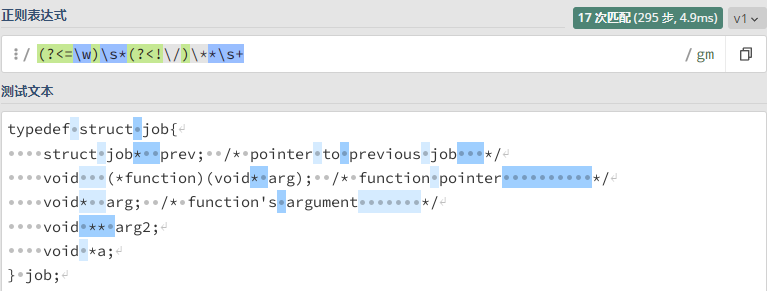

正则表达式基础
正则表达式（Regular Expression）是表示搜索模式的字符串，常缩写成 Regex 或 Regexp。它常用于匹配、查找和替换文本中的字词。此外，我们可以测试文本是否符合我们设置的规则。
本文建议在深色主题模式下阅读。
正则符号汇总
锚点：
^：匹配字符串或行的开头。$：匹配字符串或行的末尾。\b：匹配单词的开头或末尾。\B：匹配不在单词开头或末尾的位置。
字符类：
[abc]：匹配不在集合中的任意字符。[a-z]：匹配两个字符之间的任意字符，包括它们本身。.：匹配除换行符外的任意字符。\w：匹配字母、数字或下划线字符。\W：匹配除字母、数字和下划线之外的任意字符。\d：匹配所有数字字符。\D：匹配除数字外的任意字符。\s：匹配所有空白字符。\S：匹配除空白字符以外的任意字符。
标志：
g：确保表达式不会在检索到第一个匹配项时停止，即全局匹配。i：使表达式忽略大小写。m：如果不启用，^和$只匹配首行字符串的开始和结束，而不会单独匹配每一行。
量词与分支：
*：表达式匹配零个或多个。+：表达式匹配一个或多个。{1,3}：表达式匹配指定范围的位数，区间为左闭右闭。{1,}：表达式至少匹配的位数。?：使?前面的字符可选，即可以有或没有（零次或一次）。|：类似于「或」，用于匹配多种符合条件的表达式之一。
组和引用：
()：使表达式分组。\1：引用表达式的分组，数字表示为第几个分组。(?:)：创建无法引用的非捕获分组。它不是捕获分组，所以不能使用\1这种反向引用操作。
零宽断言：
(?=)：正向先行断言，就是断言后面的字符是否满足断言指定的模式，满足则匹配成功。(?!)：负向先行断言，就是断言后面的字符是否满足断言指定的模式，不满足则匹配成功。(?<=)：正向后行断言，就是断言前面的字符是否满足断言指定的模式，满足则匹配成功。(?<!)：负向后行断言，就是断言前面的字符是否满足断言指定的模式，不满足则匹配成功。
锚点
^（字符串或行的开头）
^：匹配字符串或行的开头。
示例一：
- 文本：
an answer or a question - 正则：
/^\w+/g - 解释：匹配字符串开头的单词（单词定义为包括字母、数字、下划线）。
- 在线练习
$（字符串或行的末尾）
$：匹配字符串或行的末尾。
示例一：
- 文本：
an answer or a question - 正则：
/\w+$/g - 解释：匹配字符串末尾的单词。
- 在线练习
\b（单词边界）
\b：匹配单词的开头或末尾。
示例一：
- 文本：
two questions or three questions - 正则：
/tions\b/g - 在线练习
示例二：
- 文本：
two questions or three questions - 正则：
/\bqu/g - 在线练习
示例三：
- 文本：
two questions or three questions - 正则：
/\bes/g - 在线练习
\B（非单词边界）
\B：匹配不在单词开头或末尾的位置。
示例一：
- 文本：
an answer or a question - 正则：
/n\B/g - 解释：匹配不是单词结尾的
n。 - 在线练习
示例二：
- 文本：
an answer or a question - 正则：
/\Bn/g - 解释：匹配不是单词开头的
n。 - 在线练习
字符类
[abc]（字符集）
[abc]：匹配集合中的任意字符。
示例一：
- 文本：
car ber bir bor bd bood boedr bur - 正则：
/b[oe]r/g - 解释：匹配开头是
b、结尾是r、中间 一个 字符是o或e的字符串。 - 在线练习
[^abc]（否定字符集）
[abc]：匹配不在集合中的任意字符。
示例一：
- 文本：
car ber bir bor bd bood boedr bur - 正则：
/b[^oe]r/g - 解释：匹配开头是
b、结尾是r、中间 一个 字符不是o或e的字符串。 - 在线练习
[a-z]（范围）
[a-z]：匹配两个字符之间的任意字符，包括它们本身。
示例一：
- 文本：
abcdef b ec emc - 正则：
/[b-e]/g - 在线练习
.（点）
.：匹配除换行符外的任意字符。
示例一：
- 文本：
hi012_-!? - 正则：
/./g - 在线练习
\w（单词）
\w：匹配字母、数字或下划线字符。
示例一：
- 文本：
hi 01?2 _-!? - 正则：
/\w/g - 在线练习
\W（非单词）
\W：匹配除字母、数字和下划线之外的任意字符。
示例一：
- 文本：
hELLo 01??2 _-!? - 正则：
/\W/g - 在线练习
\d（数字）
\d：匹配所有数字字符。
示例一：
- 文本：
+144-(22)-13=0x6D - 正则：
/\d/g - 在线练习
\D（非数字）
\D：匹配除数字外的任意字符。
示例一：
- 文本：
+144-(22)-13=0x6D - 正则：
/\D/g - 在线练习
\s（空白符）
\s：匹配所有空白字符。
示例一：
- 文本：
one two . - 正则：
/\s/g - 在线练习
\S（非空白符）
\S：匹配除空白字符以外的任意字符。
示例一：
- 文本：
one two . - 正则：
/\S/g - 在线练习
标志
g（全局匹配）
g：确保表达式不会在检索到第一个匹配项时停止，即全局匹配。
示例一：
- 文本：
cat dog&cat - 正则：
/cat/g - 在线练习
示例二：
- 文本：
cat dog&cat - 正则：
/cat/ - 解释：无全局标志下，则当检索到第一个匹配项时则停止。
- 在线练习
i（忽略大小写）
i：使表达式忽略大小写。
示例一：
- 文本：
CaT dog&cat - 正则：
/cat/gi - 在线练习
m（多行）
m：如果不启用，^ 和 $ 只匹配首行字符串的开始和结束，而不会单独匹配每一行。
示例一：
文本：
a black cata white cat
正则：
/^a/g解释：全局匹配字符串开头是
a的字符（不能匹配每行字符串开头是a的字符）。
示例二：
文本：
a white cata black cat
正则：
/at$/g解释：全局匹配字符串结尾是
at的字符（不能匹配每行字符串结尾是at的字符）。
示例三：
文本：
a black cata white cat
正则：
/^a/gm解释：全局匹配整个字符串 每行 开头是
a的字符。
示例四：
文本：
a black cata white cat
正则：
/at$/gm解释：全局匹配整个字符串 每行 结尾是
at的字符。
量词与分支
*（至少匹配零个）
*：表达式匹配零个或多个。
示例一：
- 文本：
bp bep beep - 正则：
/be*p/g - 在线练习
+（至少匹配一个）
+：表达式匹配一个或多个。
示例一：
- 文本：
bp bep beep - 正则：
/be+p/g - 在线练习
{1,3}（指定范围匹配）
{1,3}：表达式匹配指定范围的位数，区间为左闭右闭。
示例一：
- 文本：
bp bep beep - 正则：
/be{1,2}p/g - 在线练习
{1,}（至少匹配次数）
{1,}：表达式至少匹配的位数。
示例一：
- 文本：
bp bep beep beeep - 正则：
/be{1,}p/g - 在线练习
?（指定字符可选）
?：使 ? 前面的字符可选，即可以有或没有（零次或一次）。
示例一：
- 文本：
color colour - 正则：
/colou?r/g - 解释：单个字符可选。
- 在线练习
示例二：
- 文本：
color colour cor - 正则：
/co(lo)?r/g - 解释：捕获组可选。
- 在线练习
|（或分支）
|：类似于「或」，用于匹配多种符合条件的表达式之一。
示例一：
- 文本：
fat, cat, rat - 正则：
/(c|r)at/g或者/[cr]at/g - 在线练习
组和引用
()（捕获分组）
()：使表达式分组。
示例一：
- 文本：
hahaha, h, ha - 正则：
/(ha)+/g - 在线练习
\1（引用）
\1：引用表达式的分组，数字表示为第几个分组。
示例一：
- 文本：
hah, haa, dad, dada - 正则：
/(\w)a\1/g - 解释：捕获分组
(\w)匹配一个字母字符（包括大小写字母、数字和下划线），第二个字符为a，反向引用\1表示引用第一个捕获组中匹配到的内容。该正则匹配字符a左右两个字符相等的字符串。 - 在线练习
示例二：
- 文本：
hah, haa, dad, woawo, dada - 正则：
/(\w+)a\1/g - 解释：捕获分组
(\w+)至少匹配一个字母字符，第二个字符为a，反向引用\1表示引用第一个捕获组中匹配到的内容。 - 在线练习
示例三：
- 文本：
hah, haa, dad, wobwob, dada - 正则：
/(\w+)([ab])\1\2/g - 在线练习
(?:)（非捕获组）
(?:)：创建无法引用的非捕获分组。它不是捕获分组，所以不能使用 \1 这种反向引用操作。
示例一：
- 文本：
hahaha, hah, haaha - 正则：
/(?:ha)+/g - 解释：匹配至少出现一次
ha的字符串。 - 在线练习
零宽断言
(?=)（断言后面满足给定模式）
(?=)：正向先行断言，就是断言后面的字符是否满足断言指定的模式，满足则匹配成功。
示例一：
- 文本：
1st, 2nd, 3pc, 4nd - 正则：
/\d(?=nd)/g - 解释：匹配满足一个数字后面紧跟
nd的那个数字。在1st中有数字1，但是在正向先行断言时，检查到的第一个字符为s，与断言中的n不匹配，这时会停止匹配。 - 在线练习
正向先行断言记忆：看后面的字符是不是（
?）等于（=）断言中的模式，等于则匹配成功。
?!（断言后面不满足给定模式）
(?!)：负向先行断言，就是断言后面的字符是否满足断言指定的模式，不满足则匹配成功。
示例一：
- 文本：
1st, 2nd, 3pc, 4ne - 正则：
/\d(?!nd)/g - 解释：匹配满足一个数字后面紧跟着的不是
nd的那个数字。 - 在线练习
负向先行断言记忆：看后面的字符是不是（
?）不等于（!）断言中的模式，不等于则匹配成功。
?<=（断言前面满足给定模式）
(?<=)：正向后行断言，就是断言前面的字符是否满足断言指定的模式，满足则匹配成功。
示例一：
- 文本：
#1, $2, %3 - 正则：
/(?<=%)\d/g - 解释：匹配满足一个数字前面紧跟
%的那个数字。 - 在线练习
正向后行断言记忆：看前面（
<）的字符是不是（?）等于（=）断言中的模式，等于则匹配成功。
?<!（断言前面不满足给定模式）
(?<!)：负向后行断言，就是断言前面的字符是否满足断言指定的模式，不满足则匹配成功。
示例一：
- 文本：
#1, $2, %3 - 正则：
/(?<!%)\d/g - 解释：匹配满足一个数字前面紧跟着的不是
%的那个数字。 - 在线练习
负向后行断言记忆：看前面（
<）的字符是不是（?）不等于（!）断言中的模式，不等于则匹配成功。
示例：格式化定义
有时候我们写的代码会不规范，比如指针变量可以写成 int* a; 或者 int * a;，普通变量可以写成 int a;。
如何写一个正则表达式，来匹配所有不规范，并格式化它呢？
要规范化的代码：
1 | typedef struct job{ |
正则表达式：/(?<=\w)\s*(?<!\/)\**\s+/gm
在线练习，这个正则表达式的含义是：
(?<=\w)：断言前面是一个单词字符。\s*：匹配零个或多个空白字符。(?<!\/)：断言前面不是斜杠字符。\**：匹配零个或多个星号字符。\s+：匹配一个或多个空白字符。
综合起来，这个正则表达式的作用是匹配在单词字符后面，按顺序地：可以有或没有空格、可以有或没有星号（不能是斜杠后面的星号）、至少一个空格。
结果图：

格式化替换：
1 | import re |
替换后结果：
1 | typedef struct job{ |
参考资料：